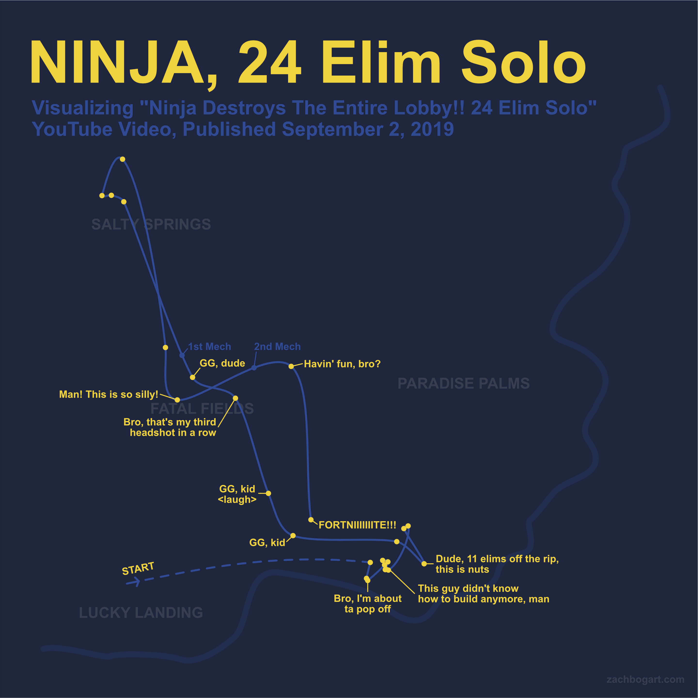

Ninja, 24 Elim Solo
Mapping how Ninja destroys the entire lobby.

This is a visualization of one of Ninja’s Fortnite runs. I plotted his eliminations with a game map overlay and connected them with smooth curves, creating an approximate movement path you can follow from start to finish. Accented with audio blurb annotations, you can get a good sense of his progression through the run.
I’ve wanted to do something with Fortnite for a while now, so this serves as a toe in the water. This was a manual creation, but it has got me thinking how it would be lovely to auto-generate these kinds of plots for streamers in the future. Someday.
Visualization Notes
The yellow dots represent the approximate locations of the eliminated players. The locations were found by watching Ninja’s YouTube video, “Ninja Destroys The Entire Lobby!! 24 Elim Solo”, and taking screenshots when eliminations were made. The mini map in each screenshot was then used to place a point on the visualization.
The light blue path is created by drawing a line between the twenty-four yellow elimination points and applying smooth curves. Because of this, the light blue path is only an approximation of Ninja’s movements and is taking liberties at certain spots, particularly with sniper eliminations. For example, the top-most yellow dot in the visualization is far from the preceding elims, implying Ninja walked over to that player to get the elimination. In actuality, Ninja sniped that player from far away rather than going up a large mountain to attack at close range. It would be interesting in the future to try a more accurate recreation of player movement, but I think this approximation tells a compelling story.
The dotted-line portion of the path approximates the initial descent from the bus. The video does not include the bus’s transit path, so it is omitted (it would have made things a little crowded, anyway).
The blue dots signify when Ninja started using a mech and when he transitioned into a new mech (where “mech” is the B.R.U.T.E. vehicle). Not all eliminations after those points were made in mechs. For example, up at Salty Springs, he exits the mech to acquire four eliminations before reentering to cover more ground. In general, it would be interesting to further explore how the type of elimination could be better displayed without overloading the viewer (color by weapon used, use of vehicle, etc.).
The annotations were taken from Ninja’s stream audio after the elimination occurred. They are lightly edited.
The dark blue squiggly line defines the border of the southwest corner of the game map. Initially I was going to include the entire outline of the map, but it served no purpose. The location names are placed where they appear on the game map. This causes some overlap of paths, points, and text (particularly at Salty Springs and Fatal Fields), but the intention was to go for accuracy with regards to the game map placement.
The text was typeset in Arial; apologies, type-lovers.
The color palette was chosen to compliment Ninja’s logo identity as of September 2019.
Fortnite Context
This run’s landing site was Pandora, a crossover event with Borderlands (termed “Mayhem” in-game). This limited-time rift zone gave players regenerative shields.
This run was recorded shortly after changes were made to the turbo build feature, which were later reverted. More info on changes to the game can be found in the Fortnite patch notes.